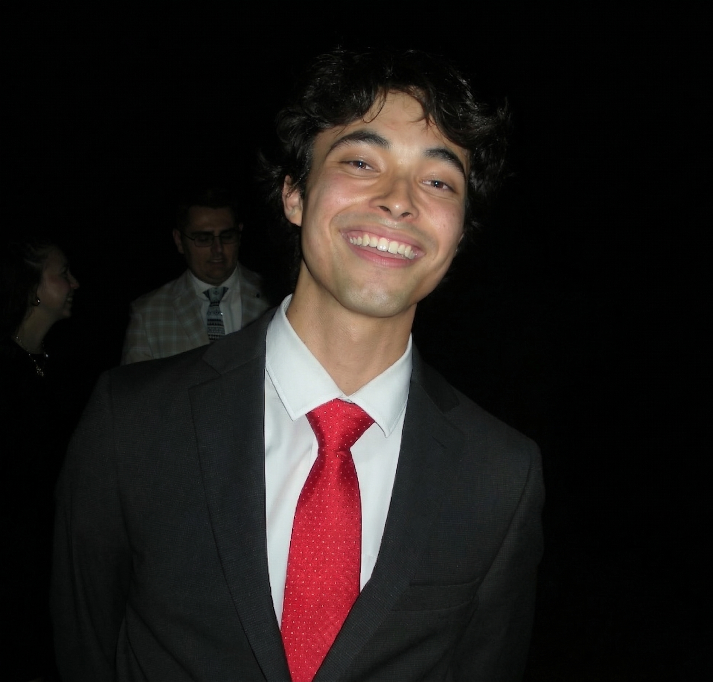

I’m a student at Brigham Young University interested in strategic management and organizational leadership. I’m passionate about helping businesses and educational institutions operate more effectively by combining analytical thinking with practical solutions. I aspire to roles where I can apply strategy, improve processes, and support responsible organizational growth.
I’m also authoring a book exploring human potential and capacity, both individually and collectively, and how we can realize it in meaningful ways.
Brigham Young University
Pre-Business – Strategic Management
Provo, Utah
Tucanos Brazilian Grill – Server
Orem, Utah | Nov 2025 – Present
Lucky Day Logistics – Delivery Driver
West Jordan, Utah | May 2025 – Sept 2025
Aldous & Associates P.L.L.C – Debt Collector
Holladay, Utah | Nov 2024 – Apr 2025
Highline – Sales Representative
Beaumont, Texas | Dec 2024
The Church of Jesus Christ of Latter-day Saints
Volunteer Representative / Missionary
San Bernardino, California | Oct 2022 – Oct 2024
Walmart – Retail Sales Associate
South Jordan, Utah | Aug 2021 – Oct 2022
Spanish – Fluent
English – Fluent
Provo, Utah
📞 385-244-7283
📧 scederlo@byu.edu
📧 spencercederlof@gmail.com